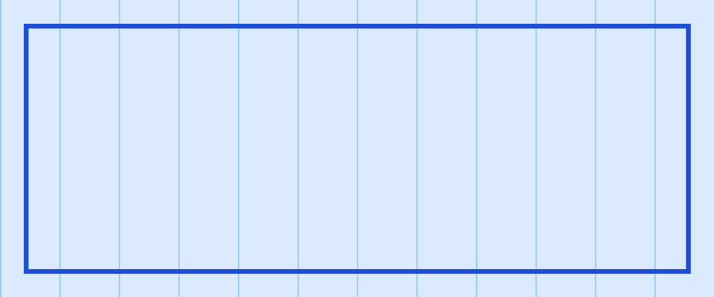

Prepared by the Operations Team for the Q3 review. See the dashboard and ops.yaml for details.
Revenue grew 12% quarter over quarter while support tickets fell 8%. The main drivers are listed below.
| Metric | Q2 | Q3 | Change |
|---|---|---|---|
| Revenue (k USD) | 1,240 | 1,389 | +12% |
| Tickets | 412 | 379 | -8% |
| Merged cell spanning two columns | Tall | n/a | |
| Churn | 2.1% | - | |

Inline image with explicit width.
Quality is not an act, it is a habit.
def total(items):
return sum(i.price for i in items)
This section checks the page-break handling and a third-level heading. Line one
line two after a hard break.
Final paragraph with superscript x2 and subscript H2O.